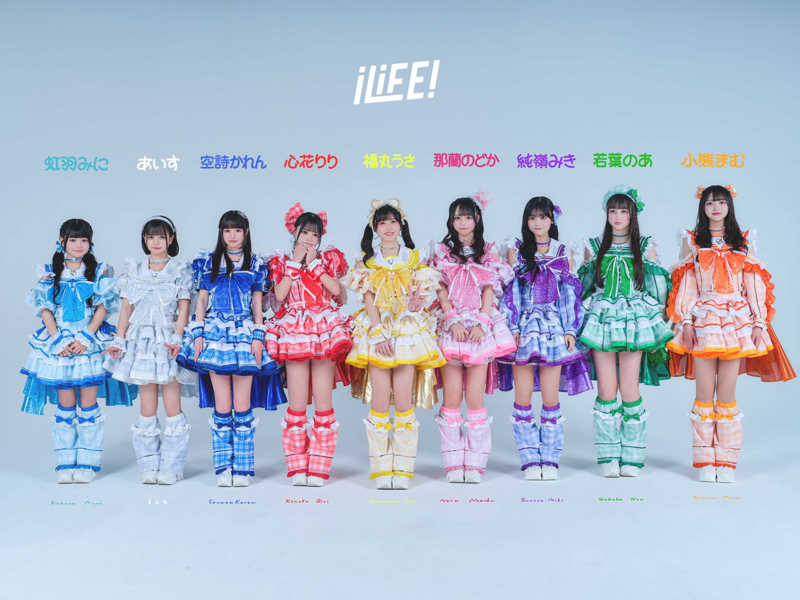

≡
メンバー
心花りり
福丸うさ
若葉のあ
那蘭のどか
あいす
空詩かれん
虹羽みに
純嶺みき
小熊まむ
← 戻る
iLiFE!コール練習サイト

コールのない曲は歌詞割のみ表示しております
-- 曲を選んでください --
星色トラベラー
sweet timer
初恋リバイバル
Sleeping face
Quest×Quest
Dokkoi!ロマンティック
黄昏サイクル
青春のパズルは埋まらない
キラメキダイアリー
HUNGRY!!!
むげんだいすき
君セン！
可変三連MIXをおぼえる歌
Ride on
アイドルライフスターターパック
Hands Up!
Shout of Joy
ヒラリラリア
会いにKiTE!
KiSEK!
ころころガール
ドラマチックミライ
ナイナイ恋煩い♡
アイドルライフブースターパック
サイクロンライフ！
のびしろグリッター
キスハグ侵略者！
#ラブコード
ガンバッテンダー
ライフステージ
デリバリサマー!!
アイドルライフエクストラパック
メッセージ
LOML
くりてぃかる♡ぷりちー
ページへGO
楽曲を選択してください
背景色を選んでね(オレンジは比較的見やすい)
-- 色を選んでください --
グレー
オレンジ
パステルブルー
ダークブルー
ピンク
水色
ライトグリーン